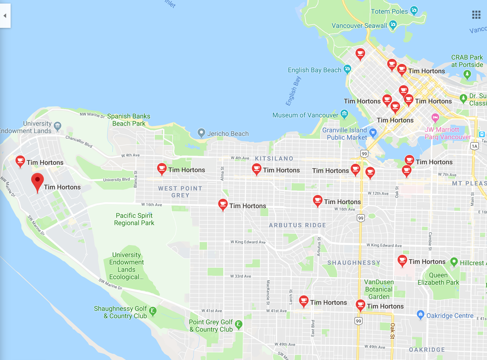
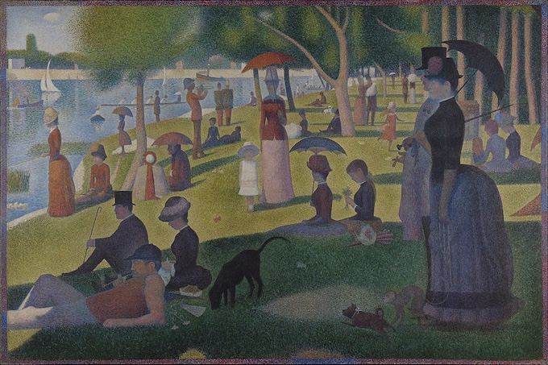
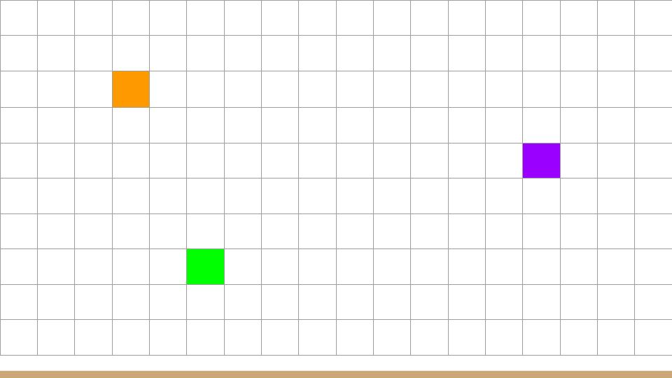
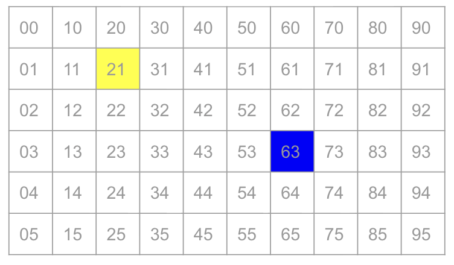
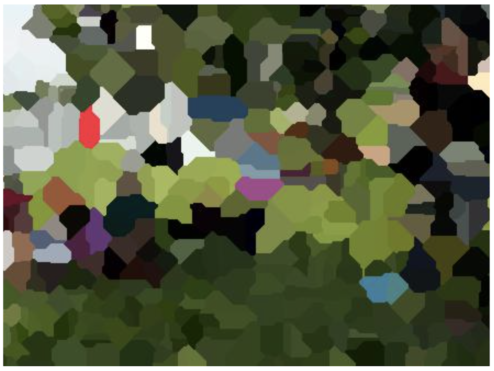

Week 8: Voronoi Art & Queues
Welcome back from Reading Week! This week we discovered one of the most beautiful intersections of art, mathematics, and computer science: Voronoi diagrams. We turned ordinary photos into stunning pointillist masterpieces, learned about the queue data structure, and got our first glimpse of graphs!
Your Growing Toolkit
Every problem we solve uses some combination of these tools:
- Representation — how we encode meaning (binary, types, RGB)
- Collections — how we group things (lists, tuples, dicts)
- Control flow — how we make decisions and repeat (if/else, loops)
- Functions — how we name and reuse logic
- Abstraction — how we hide complexity
- Efficiency — how we measure cost (summations, timing analysis)
This week: Queues + Flood Fill → Efficient algorithmic art!
The Big Picture
We started with a beautiful question: How can we create art with algorithms? This led us to Voronoi diagrams — a mathematical structure that divides space based on nearest neighbors. We implemented this concept twice: first with a naive algorithm, then with a clever flood-fill approach using queues that’s dramatically faster!
Tuesday: Voronoi Diagrams
What’s a Voronoi Diagram?
Imagine you’re standing in Vancouver and want to find the nearest Tim Hortons. A Voronoi diagram divides the entire map into regions where every point in a region is closest to one particular location.
More formally: given a set of “centers” \(c_1, c_2, \ldots, c_k\), each Voronoi region \(R_j\) contains all points that are closer to center \(c_j\) than to any other center.
Together, these regions tile the entire plane — every point belongs to exactly one region, and no point belongs to two regions!

Voronoi diagrams appear everywhere! Cell tower coverage, school district boundaries, wildlife territory analysis, crystal growth patterns, and even the spots on a giraffe. See more on Wikipedia.
From Pointillism to Algorithmic Art

Georges Seurat pioneered pointillism in the 1880s, creating images from thousands of tiny colored dots. We can create our own version using Voronoi diagrams!
The Algorithm:
- Select a subset of points from the original image
- Use those points (with their colors) as centers
- Build the Voronoi diagram, coloring each region with its center’s color
The quality of the resulting image depends on how many centers we choose and where we place them!
Planning Our Solution
Before diving into code, we thought carefully about our data types:
| Concept | Python Representation |
|---|---|
| Point | A tuple (x, y) representing pixel coordinates |
| Color | A tuple (r, g, b) for RGB values |
| Center | A (Point, Color) pair — the location and its color |
| Centers | A list of Center tuples |
| Image | A 2D grid of Colors (using PIL/Pillow) |
Data Flow:
- Read the original image into memory
- Choose random pixel locations as centers, grabbing their colors from the original
- Build a new image by assigning each pixel to its nearest center’s color
- Write the result to a file
The Naive Algorithm

For each pixel in the output image, we find the nearest center by checking the distance to every center:
for each pixel (x, y) in the image:
find the center c with minimum distance to (x, y)
color pixel (x, y) with the color of cThis works! But how efficient is it?
Complexity Analysis
Let \(n\) = image size (width × height) and \(k\) = number of centers:
| Step | Work |
|---|---|
| 1. Read image | \(O(n)\) — touch each pixel once |
| 2. Choose centers | \(O(k)\) — pick k random points |
| 3. Build new image | \(O(n \cdot k)\) — for each of n pixels, check all k centers |
| 4. Write image | \(O(n)\) — touch each pixel once |
Total: \(O(n \cdot k)\) — this gets slow when we want lots of centers!
With a 1-megapixel image and 10,000 centers, that’s 10 billion distance calculations. Can we do better? Yes!
Thursday: Flood Fill & Queues
A Faster Approach: Flip the Question! 🌊
Instead of asking “which center is closest to this pixel?”, we flip the question: start at each center and grow outward simultaneously!

One center: The color spreads outward like ripples in a pond.

Multiple centers: Colors grow simultaneously — the first to reach a pixel “claims” it!
By growing all regions at the same rate, the first color to reach a pixel wins. Each pixel is processed exactly once — no matter how many centers we have!
Meet the Queue 🐧
To implement flood fill, we need a data structure that processes items in the order they arrived. Enter the queue — a “first in, first out” (FIFO) structure:
Just like penguins waiting for fish — first to arrive, first to be served!
| Operation | Description |
|---|---|
enqueue(k) |
Add item k to the back of the line |
dequeue() |
Remove and return the item at the front |
In Python: collections.deque
Python’s deque (double-ended queue) is perfect for this:
from collections import deque
q = deque() # Create an empty queue
q.append(item) # enqueue — add to right/back
item = q.popleft() # dequeue — remove from left/front
len(q) == 0 # check if empty (or just: not q)You could use list.append() and list.pop(0), but pop(0) is \(O(n)\) because it shifts all remaining elements. With deque, both operations are \(O(1)\)!
The Flood Fill Algorithm
Here’s the magic! We start all centers in the queue, then grow outward:
from collections import deque
def voronoi_fill(image, centers):
queue = deque()
visited = set()
# Start with all centers in the queue
for (x, y), color in centers:
queue.append(((x, y), color))
visited.add((x, y))
image[x, y] = color
# Process pixels in order
while queue:
(x, y), color = queue.popleft()
# Check all 4 neighbors
for nx, ny in [(x+1, y), (x-1, y), (x, y+1), (x, y-1)]:
if (nx, ny) not in visited and is_valid(nx, ny):
visited.add((nx, ny))
image[nx, ny] = color
queue.append(((nx, ny), color))A neighbor (nx, ny) is valid if:
- It’s within the image bounds:
0 <= nx < widthand0 <= ny < height - It hasn’t been visited yet (checked via the
visitedset)
Why Does This Work?
The queue ensures we process pixels in order of distance from their center:
- All centers start in the queue (distance 0)
- We process a center, adding its immediate neighbors (distance 1)
- We process those neighbors, adding their neighbors (distance 2)
- And so on…
Because all centers start together and grow at the same rate, a pixel is claimed by whichever center it’s actually closest to. The queue keeps everything synchronized!
Complexity of Flood Fill
| Step | Work |
|---|---|
| 1. Read image | \(O(n)\) |
| 2. Choose centers | \(O(k)\) |
| 3. Build new image | \(O(n)\) — each pixel processed exactly once! |
| 4. Write image | \(O(n)\) |
Total: \(O(n)\) — independent of the number of centers! 🎉
This is a massive improvement:
| Approach | Operations (1M pixels, 10K centers) |
|---|---|
| Naive | 10,000,000,000 (10 billion!) |
| Flood Fill | 1,000,000 (1 million) |
That’s 10,000× faster! Now we can use as many centers as we want.
The Result

Beautiful algorithmic art, efficiently computed! More centers = more detail, and our queue-based approach handles them all gracefully.
Designing Solutions: Key Questions
When implementing the flood fill, we worked through these design questions:
1. What should we put on the queue?
A tuple of ((x, y), color) — the pixel location and the color it should receive.
2. Which deque functions do we use?
append()to enqueue (add to back)popleft()to dequeue (remove from front)
3. How do we check if the queue is empty?
while queue:works because empty collections are falsy- Or explicitly:
while len(queue) > 0:
4. What are the “neighbors” of pixel (x,y)?
The 4-connected neighbors: (x+1, y), (x-1, y), (x, y+1), (x, y-1)
5. What makes a neighbor “invalid”?
- Out of bounds:
nx < 0ornx >= widthorny < 0orny >= height - Already visited (already has a color)
Preview: Graphs 🕸️
Here’s a beautiful realization: the flood fill pattern we just learned is actually a famous algorithm called Breadth-First Search (BFS)!
We can think of an image as a graph:
- Each pixel is a vertex (node)
- Each adjacency (up/down/left/right) is an edge connecting neighboring vertices
Graphs are one of the most versatile data structures in computer science. They model:
- Social networks (people connected by friendships)
- Maps (intersections connected by roads)
- Web pages (pages connected by links)
- Game states (positions connected by moves)
Next week, we’ll explore graphs as a general structure for modeling all kinds of problems!
Quick Reference
Queue Operations
| Operation | deque Method |
Description |
|---|---|---|
| Create | q = deque() |
Empty queue |
| Enqueue | q.append(x) |
Add to back |
| Dequeue | q.popleft() |
Remove from front |
| Peek | q[0] |
Look at front without removing |
| Is empty? | not q or len(q) == 0 |
Check if empty |
| Size | len(q) |
Number of items |
Stack vs Queue
| Data Structure | Order | Add | Remove | Analogy |
|---|---|---|---|---|
| Stack | LIFO | push (top) | pop (top) | Stack of plates |
| Queue | FIFO | enqueue (back) | dequeue (front) | Line at coffee shop |
Voronoi Algorithm Comparison
| Algorithm | Time Complexity | Good for |
|---|---|---|
| Naive | \(O(n \cdot k)\) | Few centers |
| Flood Fill | \(O(n)\) | Many centers |
What’s Next?
Week 9: Graphs! We’ll formalize the graph data structure and learn more algorithms that build on BFS. Get ready to model all kinds of connected systems!
Examlet 3: Coming up — book your CBTF slot!
Project 1: Finish strong on your Pokémon Data Explorer!